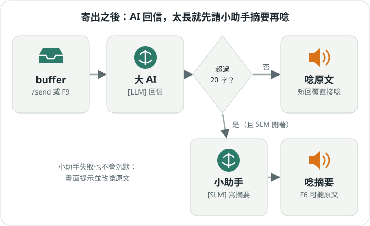

第 03 章
寄給 AI、聽它回答
托盤裡的字準備好就寄出去。AI 回信後，小幫手唸給你聽。
寄出去
按 F9（KDE Wayland 是 Alt+F9）或打 /send。寄件匣會清空，像把信投進郵筒；你的話和 AI 的回信都記進對話紀錄。
小提醒 只有寄件匣能寄。在草稿匣按寄出，它會提醒你「/send 僅適用於 buffer 工作區」。
它會唸給你聽

- 回信超過 20 字，而且
[SLM] enabled = true：先請小一點的 AI 寫摘要，唸摘要。 - 回信很短，或沒開小助手：直接唸原文。
- 想聽完整原文按 F6；不想聽了按 F10。
- 小助手出錯也不會沉默：畫面顯示「摘要失敗」，改唸原文。
換一個嗓音
[TTS]
engine = kokoro ; 或 pyttsx3（espeak）
kokoro_voice_zh = zf_001
kokoro_voice_en = af_heart中文和英文會自動分段，各用各的嗓音。